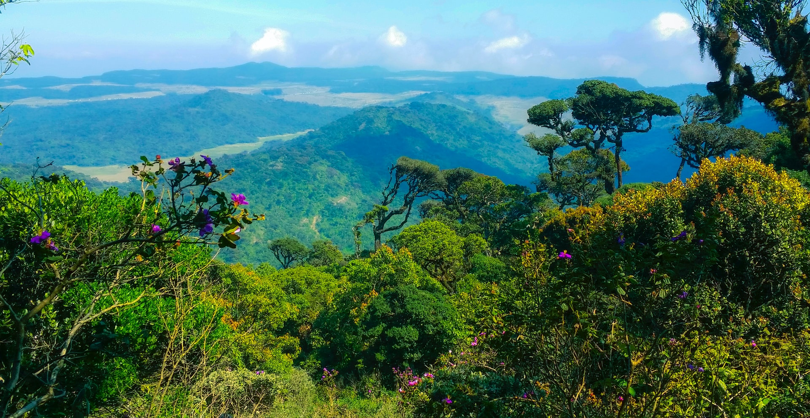
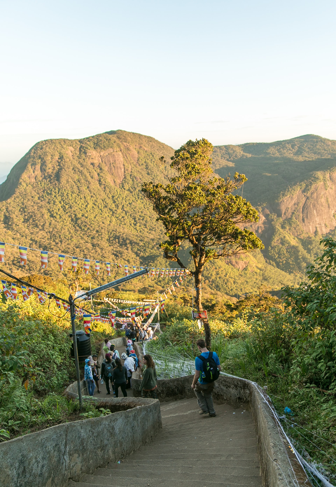

Ella Rock:

Ella (Sinhala: ඇල්ල; Lit. "water fall"; Tamil: எல்ல) is a small town in the Badulla District of Uva Province, Sri Lanka governed by an Urban
Council. It is approximately 200 kilometres (120 mi) east of Colombo and is situated at an elevation of 1,041 metres (3,415 ft) above sea
level. The area has a rich bio-diversity, dense with numerous varieties of flora and fauna. Ella is surrounded by hills covered with
cloud forests and tea plantations. The town has a cooler climate than surrounding lowlands, due to its elevation. The Ella Gap allows
views across the southern plains of Sri Lanka.
For more you can visit their web site : Go to Page
Hortan Plains:

Horton Plains National Park (Sinhala: හෝර්ටන් තැන්න ජාතික උද්යානය Hortan Thanna Jathika Udyanaya) is a national park in the central highlands
of Sri Lanka that was designated in 1988. It is located at an elevation of 2,100–2,300 m (6,900–7,500 ft) and encompasses montane grassland
and cloud forest. It is rich in biodiversity and many species found here are endemic to the region. It is also a popular tourist destination
and is situated 8 kilometres (5.0 mi) from Ohiya, 6 kilometres (3.7 mi) from the world-famous Ohiya Gap/Dondra Watch and 32 kilometres
(20 mi) from Nuwara Eliya
For more you can visit this web site : Go to this Page
Adam's Peak:

Adam's Peak is a 2,243 m (7,359 ft) tall conical mountain located in central Sri Lanka. It is well known for the Sri Pada (Sinhala: ශ්රී පාද),
i.e., "sacred footprint", a 1.8 m (5 ft 11 in) rock formation near the summit, which in Buddhist tradition is held to be the footprint of
the Buddha, in Hindu tradition that of Hanuman or Shiva (Tamil: சிவனொளிபாதமலை, lit. 'Sivanolipaathamalai'), i.e., "Mountain of Shiva's Light",
and in some Islamic and Christian traditions that of Adam, or that of St. Thomas.
For more info you can visit this web site : Go to this Page